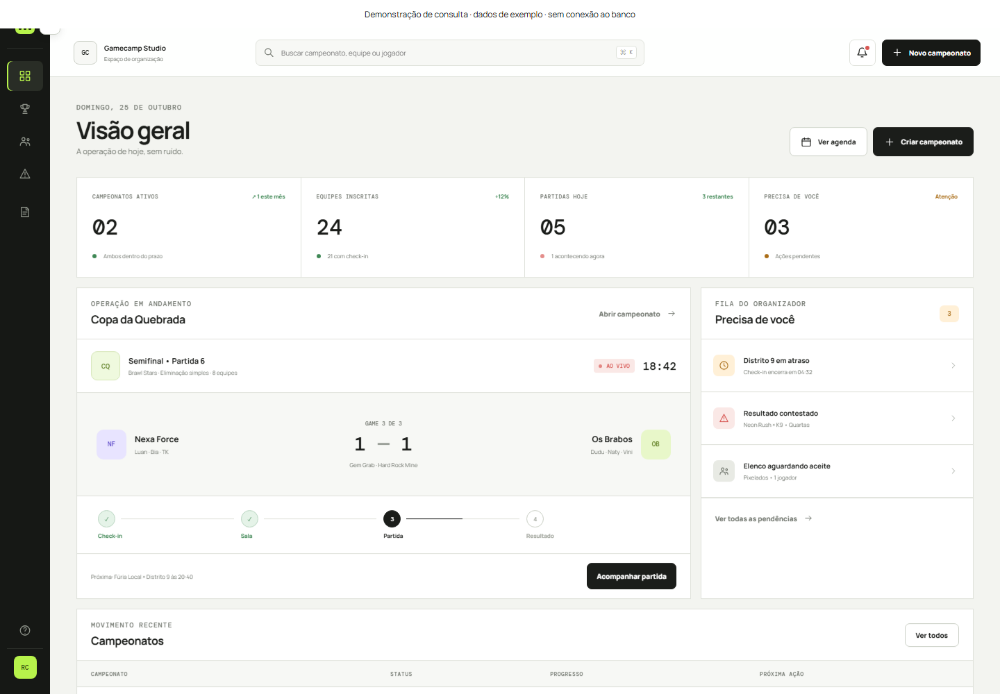

Gamecamp
Equipes, partidas e organização em um mesmo sistema.
JavaScript · Vite · Supabase
Interface original do Gamecamp em demonstração isolada, com os dados de exemplo do projeto.
Contexto
Organizadores precisam conduzir inscrições, equipes e partidas com diferentes permissões de acesso.
A solução
O projeto separa administração da plataforma, organização do campeonato e participação dos jogadores.
Abrir projeto publicado ↗